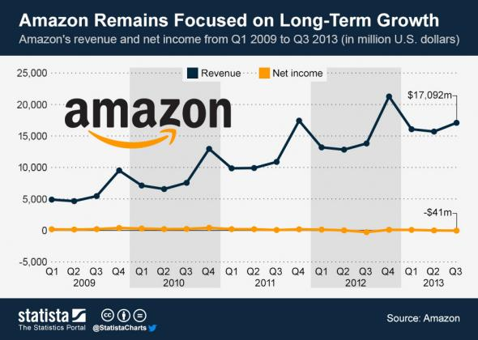

你有所不知，股东信任贝索斯原来是因为他的财技
关于亚马逊贝索斯，最著名的莫过于他每年写给股东的信，每次都必然提到要股东着眼于 长远，切莫因为眼前的蝇头小利而输了大局。
而亚马逊的股东们好像真的被贝索斯说服了似的，就好像今年一月亚马逊财报表明公司利润 下降 45%，但这样的消息仅仅是让亚马逊的股价下跌一点点，如果是别的公司，股价早就 跌到股民想跳楼。
换言之，股东们如此相信贝索斯的“长期价值”，竟然不担心公司盈利下跌将近一半。这是 为什么？
这个问题和我们如何看待“亏损”相关。企业出现赤字并非就一定是坏事。如果企业本身处于 急速的增长期，那么为了扩大业务，出现一定的亏损属于正常的情况。
从财政的角度看，出现这样的赤字，说不定还表明公司财政状况健康。在股东看来，亚马逊 难以置信的低利润率，至少对线下实体商城产生威胁，而电子商务产业仍然前景可观。
当然仅仅这样的认识不能决定股东会完全相信贝索斯，不然美国股市那么多做电子商务的上 市企业，为何独独对亚马逊那么好？或许是因为公司稳定的财务表现，Slat 引用咨询公司 Statista 用一张表来说明：

从上表中可以看出，无论何时亚马逊的亏损额一定控制在4100万美元左右，而且从表格来看 ，这一记录至少保持了4年。换言之，不管公司作出怎样的决定，基于信用记录，股东们都 可以预期亚马逊的损失。这是一种极为精确，也是极为可怕，但也是为人带来信心的财技。
简单的来说，一家有能力控制自己亏损的公司，要它赚钱那当然是分分钟的事情。
你仔细看极大值点都在Q4，圣诞购物季啊，其他季节都差不多……美国各大电商的曲线都差 不多的。。。。
明明是下面那根直线更牛逼…… – -
尼玛………利润那条线死死咬着0那条线………bezos果然牛逼，每年都能把钱花的几乎一个子不剩 ，还能始终保持营收增长和亏损不扩大。
这个大概就跟星际高手手里余钱一直不会超过500差不多，我等渣渣动不动就成千上万。 这个比喻相当到位。。。疯狂扩张中。。。
Net income 是淨利不是亏损额。